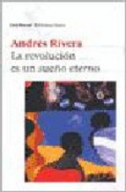
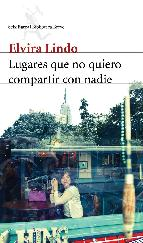
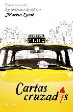

La revolución es un sueño eterno de Andrés Rivera
Sun, 27 Nov 2011 06:00:26 +0000
Título: La revolución es un sueño eterno Autor: Andrés Rivera País: Argentina Año de publicación: 2005 Idioma original: Español Título original: La revolución es un sueño eterno Páginas: 207 ISBN: 9789875803503 Web: Extensa e interesante entrevista con Andrés Rivera donde, entre otras cosas, habla de esta novela. La revolución es un sueño eterno podría entrar [...]
Título: La revolución es un sueño eterno
Autor: Andrés Rivera
País: Argentina
Año de publicación: 2005
Idioma original: Español
Título original: La revolución es un sueño eterno
Páginas: 207
ISBN: 9789875803503
Web: Extensa e interesante entrevista con Andrés Rivera donde, entre otras cosas, habla de esta novela.

La revolución es un sueño eterno podría entrar en la categoría de novela histórica, siempre y cuando pasemos por alto el hecho de que su autor, el argentino Marcos Ribak, más conocido por su seudónimo de Andrés Rivera, rechaza esta denominación para sus obras. Por lo demás, ésta tampoco es una novela histórica tradicional, ya que el protagonista la narra en primera persona, y los datos biográficos han sido dejados en un segundo plano para narrar aquello que el autor siente deseos de narrar –más allá de que reconoce que La revolución es un sueño eterno le insumió dos años de trabajo, en los cuales se documentó profusamente con fuentes históricas.
Ésta es la historia de Juan José Castelli, quien fue uno de los ideólogos de la llamada Revolución de Mayo, el comienzo del proceso independentista que llevaría a que las Provincias Unidas del Río de la Plata se independizaran de España. La historia argentina está protagonizada por hombres y mujeres que, como Castelli, soñaron con una revolución que no llegarían a ver en vida. Castelli era abogado, y durante sus estudios se impregnó de las ideas de la Ilustración francesa. Junto con otros hombres –como su primo Manuel Belgrano, Cornelio Saavedra o Mariano Moreno- condujeron el primer gobierno patrio luego de expulsar al Virrey Cisneros. Pero diferencias dentro del propio grupo, traiciones, codicias y ambición de poder, llevaron a que los sueños del grupo más revolucionario quedaran sepultados.
Al menos así se siente el Castelli protagonista de esta novela cuando, agonizando en su habitación, enfermo del cáncer de lengua que lo silenció definitivamente y que lo llevará a la tumba, reflexiona sobre el papel que le ha tocado jugar en la revolución. En la historia se entremezcla el juicio al que fue sometido luego de una derrota militar, las mujeres de su vida, las partidas de ajedrez, sus amigos y sus rivales.
Narrada con el estilo premiado, sumamente poético y personal de Andrés Rivera, La revolución es un sueño eterno es el grito de alguien que ha perdido su voz, alguien a quien en su momento se llamó “el orador de la Revolución” y que, no sin ironía, reflexiona sobre lo que le ha deparado el destino.
Opinión personal: Me interesaba esta novela desde su perspectiva histórica, pero no hay que engañarse (ni Andrés Rivera pretende engañar a nadie): La revolución es un sueño eterno es ficción. Por lo demás, es el segundo libro que leo de este autor, y su estilo, a mi gusto repetitivo, no me termina de convencer.
Lugares que no quiero compartir con nadie de Elvira Lindo
Fri, 25 Nov 2011 06:00:27 +0000
Título: Lugares que no quiero compartir con nadie Autor: Elvira Lindo País: Francia Año de publicación: 2011 ISBN: 9788432214059 “Este libro es una trampa a mí misma: hablo de lugares que no me gustaría compartir con nadie, porque forman parte de mi vida cotidiana, no es una guía turística, pero ya se sabe, igual que [...]
Título: Lugares que no quiero compartir con nadie
Autor: Elvira Lindo
País: Francia
Año de publicación: 2011
ISBN: 9788432214059

“Este libro es una trampa a mí misma: hablo de lugares que no me gustaría compartir con nadie, porque forman parte de mi vida cotidiana, no es una guía turística, pero ya se sabe, igual que el chismoso no puede evitar contar un secreto, el narrador cae siempre en el vicio de escribir lo que vive.” Así presenta Elvira Lindo a su más reciente libro, titulado precisamente Lugares que no quiero compartir con nadie.
En sus páginas, la autora recorre aquellas partes de la ciudad de Nueva York que tienen algo especial, sitios que le remiten a determinada situación personal o que pertenecen al imaginario colectivo a través del cine o de la literatura, bares, panaderías, cines, parques… El punto de partida es una charla casual con un desconocido en el barrio de Queens, a quien la escritora ha de explicar quién es. De esta manera, Elvira Lindo se retrata a sí misma a medida que descubre rincones de Nueva York. Al hacerlo, nos revela –con un estilo propio, y una voz narrativa tan literaria como empática- la naturaleza de algunos lugares que existen todavía en la gran manzana y otros que persisten en el corazón.
Elvira Lindo nació en Cádiz en 1962. Es guionista de cine además de escritora, y se hizo conocida como la creadora del personaje Manolito Gafotas. En 1998 obtuvo el Premio Nacional de Literatura Infantil. Ese mismo año se publicó El otro barrio, su primera novela para adultos. A esta autora le gusta resumir su carrera profesional en una frase: «Elvira Lindo vive y trabaja en Madrid».
Cartas cruzadas de Markus Zusak
Wed, 23 Nov 2011 06:00:46 +0000
Título: Cartas cruzadas Autor: Markus Zusak País: Australia Año de publicación: 2011 ISBN: 9788426419804 Cartas cruzadas es la nueva novela de Markus Zusak, autor del éxito de ventas La ladrona de libros. ¿Cuánto conoces a las personas que más te quieren? ¿Sabes cuáles son sus sueños, sus esperanzas y sus anhelos? ¿Estás dispuesto a aprender [...]
Título: Cartas cruzadas
Autor: Markus Zusak
País: Australia
Año de publicación: 2011
ISBN: 9788426419804

Cartas cruzadas es la nueva novela de Markus Zusak, autor del éxito de ventas La ladrona de libros. ¿Cuánto conoces a las personas que más te quieren? ¿Sabes cuáles son sus sueños, sus esperanzas y sus anhelos? ¿Estás dispuesto a aprender algo insólito de ti mismo? Ésta es la historia de descubrimiento y superación personal que emprende un joven cuando, al ayudar a quienes lo rodean, descubre el camino hacia su propia felicidad.
Ed Kennedy es un chico cualquiera en un suburbio cualquiera de una gran ciudad. Trabaja de taxista y comparte un departamento bastante descalabrado con su perro. No está solo: siempre tiene a su alrededor a un grupo de amigos que le piden a la vida poco o nada, hasta que un día sucede algo inesperado, y Ed tiene que cumplir una misión. Día a día, noche a noche, el joven aprenderá el verdadero valor de conceptos como afecto, amistad y amor, que no son palabras vacías sino verbos vivos: si quieres saber, pregunta; si pretendes ayudar, actúa; si quieres cambiar, no esperes. Con frecuencia, son esos gestos pequeños los que mueven el mundo.
En Cartas cruzadas, Markus Zusak nos demuestra que cada uno de nosotros, incluso un chico cualquiera en un suburbio cualquiera, puede dar el primer paso.
El autor nació en Australia en el seno de una familia humilde, trabajó como conserje y después estudió profesorado de inglés, compaginando sus estudios con la escritura. Ha publicado varios libros de literatura juvenil y alcanzó notoriedad con La ladrona de libros. Ha obtenido numerosos premios de literatura juvenil.